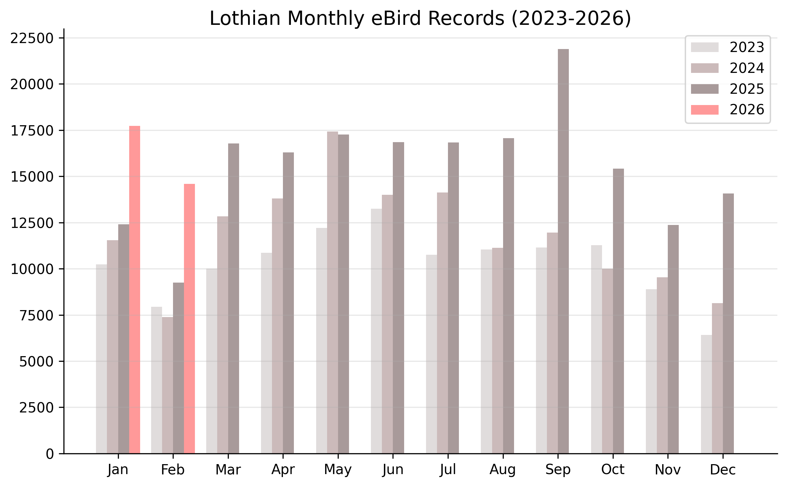

Past 5 days data from eBird showing 291 notable records of 91 species.
In total, 4035 observations of 132 species were recorded across 154 locations.
Based on 253 checklists submitted by 76 birders.
This report covers Edinburgh & the Lothians and includes unverified and provisional records.

; ?>)